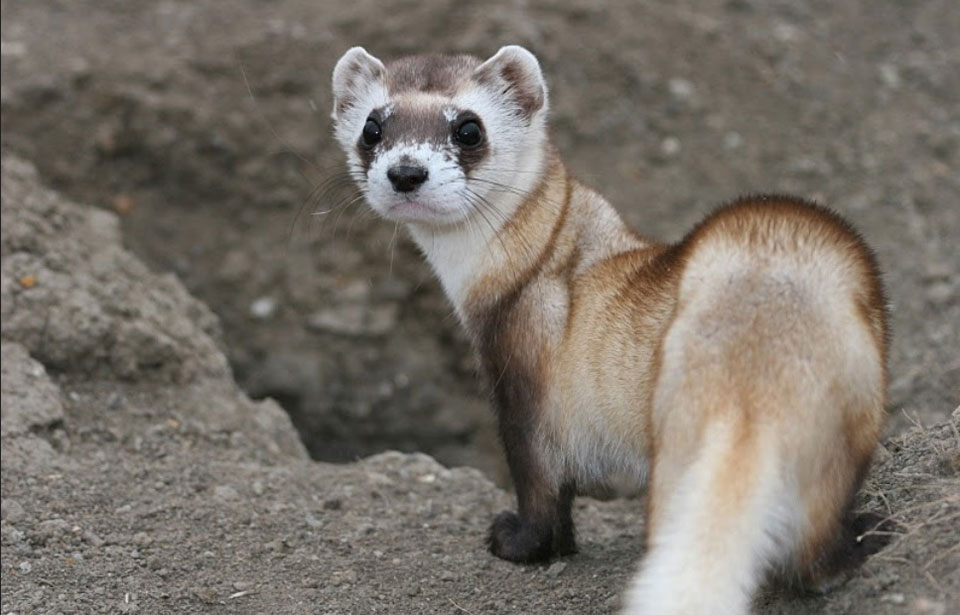
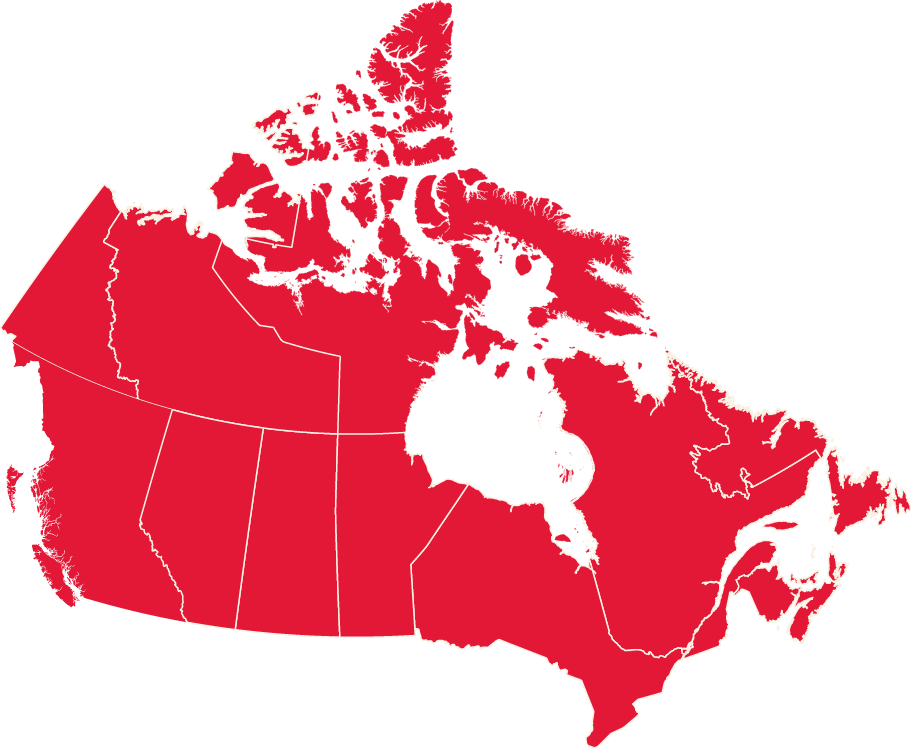
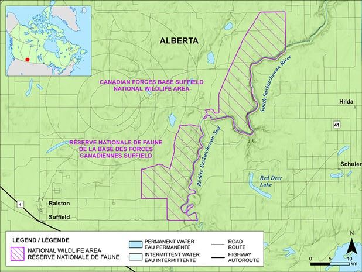

Contents
- The crisis of 21st century
- The top 10 reason we create The protected area
- Introduction
- Description
- The map of The Suffield National Wildlife Area
- The following links to learn more about the topic
- References
The crisis of 21st centeury 
The current extinction crisis is entirely of our own making. More than a century of habitat destruction, pollution, the spread of invasive species, overharvest from the wild, climate change, population growth and other human activities have pushed nature to the brink.
Note: Forest loss and degradation is mostly caused by the expansion of agricultural land, intensive harvesting of timber, wood for fuel and other forest products, as well as overgrazing.
Our planet now faces a global extinction crisis never witnessed by humankind. Scientists predict that more than 1 million species are on track for extinction in the coming decades.
The top 10 reason we create The protected area

- To provide safe havens for wild plants and animals.
- To sustain and strengthen Indigenous knowledge and value systems and their application in the conservation of landscapes and cultural practices of significance for Indigenous peoples and all life.
- To strengthen our resilience to climate change.
- To maintain functioning ecosystems and the benefits they provide.
- To improve our overall health and well-being through contact with nature.
- To benefit and diversify local economies.
- To celebrate our natural and cultural heritage.
- To build knowledge and understanding of natural systems and the impacts of human activity.
- To provide opportunities for outdoor recreation.
- To conserve vital gene pools.
Introduction
Canadian Forces Base (CFB) Suffield National Wildlife Area (NWA) borders the South Saskatchewan River in southeastern Alberta. The CFB Suffield NWA is unique and significant on a national scale with its large expanse of native prairie and 28 species at risk.
Description
In 2003, the Canadian Forces Base (CFB) Suffield NWA was established. It is located inside CFB Suffield in Alberta, Canada, and covers 45,836 hectares (ha). CFB Suffield is almost half the area of Prince Edward Island and is one of the biggest pieces of essentially uncultivated grassland left in the Prairies. The CFB Suffield NWA is the only NWA that provides protection on a large enough scale to ensure the survival and recovery of prairie grassland species that have been listed as threatened or endangered. Native prairie grasslands are disappearing at an alarming rate, and the creation of this NWA will help to safeguard prairie habitat for the benefit of local and regional communities.
The military has long recognized the unique and fragile nature of the Suffield NWA ecosystem with the military having protected the area since the base was established in 1971. No ground training occurs within the NWA in order to protect the integrity of native grasslands and wildlife habitat. However, nearby military training and past management strategies have resulted in some changes, such as the fire frequency in portions of the NWA.
Many ecosystems may be found in CFB Suffield NWA. The South Saskatchewan River produced deep coulees and steep valley slopes in the NWA, as well as undulating native grasslands, huge sand hills and sand dunes. Small wetlands and occasional springs may be found throughout the NWA, as well as riparian sage flats and cottonwood woods in the valley bottom.
The large size, diverse habitats, large sand deposits, and position of the NWA near the northern edge of the dry mixed-grasslands make the NWA a refuge for wildlife. This includes a diverse assemblage of:
- plants
- mammals
- birds
- reptiles
- amphibians
- insects
The map of The Suffield National Wildlife Area
The following links to learn more about the topic:
- Canadian Forces Base Suffield National Wildlife Area
- Canadian Forces Base Suffield NWA pamphlet
- Protected areas are helping save our favourite animals - but let's not forget the others
- Protected Areas
- Protected areas in Canada
- Canadian Protected and Conserved Areas Database
- Top 10 Reasons for Protected Areas
{kind=link}
References
- Government Of Canada
- NatureCanada
- Suffield National Wildlife Area wikipedia
- Center For Biological Diversity
- Ontario Nature